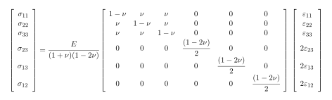
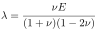
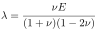

Next: Thermo-elasticity Up: Multiphysics problems Previous: Multiphysics problems Contents
When rocks deform, most of the deformation transfers into changes of porosity. In reality, the solid phase can also deform and change volume.
In that case the equation that links stresses and deformations
 needs to be corrected according to Biot's effective stress:
needs to be corrected according to Biot's effective stress:
 |
(3.34) |
where  is the Biot coefficient and
is the Biot coefficient and
 is the identity tensor.
In the case of linear elastic and isotropic porous media, the Biot coefficient is:
is the identity tensor.
In the case of linear elastic and isotropic porous media, the Biot coefficient is:
 |
(3.35) |
where
 is the drained bulk modulus of the porous solid and  is the unjacketed bulk modulus.
The unjacketed bulk modulus is equal to the mineral bulk modulus
is the unjacketed bulk modulus.
The unjacketed bulk modulus is equal to the mineral bulk modulus
 when all porosity is connected and the rock has a mono-mineral composition.
In anisotropic media, the correction factor becomes a tensor
when all porosity is connected and the rock has a mono-mineral composition.
In anisotropic media, the correction factor becomes a tensor
 .
The corrections for poroelasticity
 become significant in tight rocks with high stiffness, and low and unconnected porosity.
.
The corrections for poroelasticity
 become significant in tight rocks with high stiffness, and low and unconnected porosity.